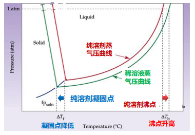
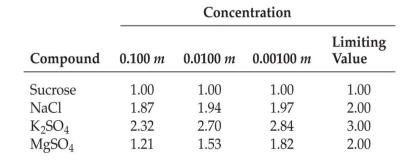

Time: 2022/09/24
Note Author: XrySamuel
Textbook: 普通化学原理
- 定义 1：两种或两种以上的物质混合形成均匀稳定的分散体系
- 定义 2：均匀混合物
- 粗分散体系（r > 1000 nm）：悬浊液或乳浊液
- 分子分散体系（r < 1 nm）：真溶液
- 分子团簇分散体系：胶体溶液
油滴在水中，随浓度降低：悬浊液 → 胶体 → 真溶液
浓度单位：
ppm=10−6
ppb=10−9
ppt=10−12
质量分数：w%=溶质的质量+溶剂的质量溶质的质量×100%
摩尔分数：x=溶质的物质的量+溶剂的物质的量溶质的物质的量
质量摩尔浓度：m=溶剂的质量溶质的摩尔数(mol/kg)
物质的量浓度：c=溶液的体积溶质的摩尔数(mol/L)
饱和溶液：与溶质固体共存，表观上溶液和固体中溶质的量都不再发生改变，处于平衡状态的溶液
在一定温度与压力下，一定量饱和溶液中溶质的含量
它的表示方法：
- 饱和溶液浓度（mol/L）
- 100 g 溶剂中达到饱和所加入的溶质质量 （g/100 g）
- （气体溶质专用）达到饱和所溶解的气体体积
溶解过程：溶剂分子拆散，溶质分子拆散，溶剂和溶质分子相结合（溶剂化）
溶质和溶剂的本质：「相似者相溶」
影响溶解度的因素：
- 固体溶于液体：
- 温度：其他条件不变，大部分化合物的溶解度随温度升高而增大
- 结构相似，固体熔点越低（分子间作用力越接近液体），溶解度越大
- 气体溶于液体：
- 温度：其他条件不变，溶解度随温度升高而减小
- 压强：其他条件不变，溶解度随压强增大而增大
- 同种类型的气体，沸点越高（分子间作用力越接近液体），溶解度越大
溶剂化：溶液中的离子会与极性溶剂分子（例如水）间产生离子-偶极之间的作用力
- 重结晶提纯硫酸铜（CuSO4⋅5H2O 和 Fe(NO3)3⋅6H2O 的溶解度差异）
- 从草木灰中提取钾盐
- 食盐提纯
- 用 CCl4 萃取水中的碘
- 氦空气
拉乌尔定律：当温度一定时难挥发溶质的稀溶液的蒸汽压下降值与溶质的摩尔分数成正比，而与溶质的本性无关 Δp=nA+nBnAp0=xAp0 其中
- Δp：溶液蒸汽压下降值
- p0：纯溶剂的蒸汽压
- nA、nB：溶质、溶液的物质的量
- xA：溶质的摩尔分数
解释：溶质的质点占据了液体表面溶剂分子的位置 → 溶剂分子的蒸发速度降低 → 气液平衡时，溶液蒸汽压低于纯溶剂蒸汽压
浓度越大，这种效应就越显著
应用：在密闭容器中，放置两个烧杯，分别加入等量的盐水和纯水，在足够长的时间之后，装有纯水的烧杯将会变干
溶液的蒸汽压曲线位于纯溶剂蒸汽压曲线下方
对稀溶液来说，若要使其蒸汽压达到 1atm 使其沸腾时，需要较纯溶剂更高的温度 → 沸点升高
类似的，液体与固体之间也要在更低的温度下建立平衡 → 凝固点降低

稀溶液的沸点升高 ΔTb 为稀溶液的沸点 Tb 减去纯溶剂的沸点 Tb0，即 ΔTb=Tb−Tb0
稀溶液的沸点升高 ΔTb 正比于溶液的浓度，即 ΔTb=Kbm 其中，Kb 为溶剂的摩尔沸点升高常数，m 为溶液的质量摩尔浓度（1kg 溶剂所含物质的量）
稀溶液的凝固点下降 ΔTf 为纯溶剂的沸点 Tf0 减去稀溶液的沸点 Tf，即 ΔTf=Tf0−Tf
稀溶液的凝固点下降 ΔTf 正比于溶液的浓度，即 ΔTf=Kfm 其中，Kf 为溶剂的摩尔凝固点下降常数，m 为溶液的质量摩尔浓度（1kg 溶剂所含物质的量）
范霍夫方程：非电解质稀溶液的渗透压满足 ΠV=nRT Π=cRT 其中
- Π：溶液的渗透压（kPa）
- V：溶液的体积（L）
- n：溶液的物质的量（mol）
- c：溶液的浓度（mol/L）
对于含非挥发性溶质的溶液来说，蒸汽压下降、沸点升高、凝固点降低以及渗透压等性质，统称为依数性，即指定溶剂的种类和数量后，这些性质只去接与所含溶质的分子数目，与溶质的本质无关
Δp=nA+nBnAp0=xAp0 ΔTb=Kbm ΔTf=Kfm ΠV=nRT
Arrhenius 电离学说
- 电离：电解质在溶液中因溶剂作用，自动解离成带电质点（离子）
- 正负离子不停运动相互碰撞又可以结合成分子，电离的百分率称电离度 α；
- 电离是在溶解过程形成的，电解质具有导电性，单位体积溶液中离子越多，导电能力越强
离子氛 → 强电解质电离度 α<1
活度 a 和活度系数 γ：电解质溶液中能有效地自由移动离子的有效浓度 a=γc，称为活度，其中 c 为浓度，γ 为活度系数，它代表离子间力影响的大小，与浓度、离子的电荷数有关
Debye - Huckel 极限公式：引入离子强度 I=21(m1z12+m2z22+⋯+mnzn2)，其中
- I：离子强度（mol/kg）
- mi：溶液中第 i 种离子质量摩尔浓度（mol/kg）
- zi：溶液中第 i 种离子的电荷数
活度系数与离子强度的关系：lgγ±=−A∣z(+)z(−)∣I 其中
- A：常数，25oC 时水溶液中 A=0.509kg21mol21
- z(+)、z(−) 为正、负离子的电荷数
上式适用于 c⩽0.02mol/L 的稀溶液，离子强度越大，活度系数越小

引入修正因子 i：
ΔTb=iKbm ΔTf=iKfm Π=icBRT
胶体溶液：均相；1-1000nm 范围内，黏度比真溶液大
分类：溶胶、大分子溶液、缔合胶体
溶胶（通常为 1-100nm）：固态胶体粒子分散在液态介质中，带电荷（如 Al(OH)3、Fe(OH)3 溶胶带正电荷，As2S3、Sb2S3 溶胶带负电荷)，使胶体稳定